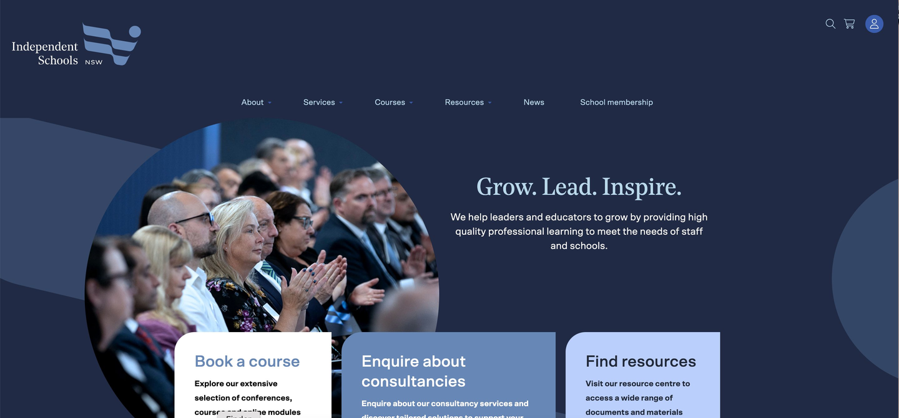

From AISNSW to Independent Schools NSW, redesigning the digital presence of one of Australia's most significant education peak bodies, serving over 430 schools across New South Wales.
AISNSW had proudly served the NSW independent schools sector for nearly six decades. But its digital presence and brand identity had not kept pace with the sector's growth and ambition. With one in five NSW children now attending an independent school, the organisation needed a brand that reflected its influence and vision.
As the designer on the project, I was responsible for translating a bold organisational rebrand into a cohesive digital experience. That meant shaping the visual direction, information architecture, and brand expression of the new site from the ground up, running research sessions with school principals to ground every decision in genuine user insight, and working closely with internal stakeholders throughout to build alignment and creative buy-in.
Alongside the brand and design work, the organisation was also migrating to Microsoft Dynamics, a cloud-based CRM. Rather than treating this as a purely technical challenge, the focus was on what it meant for the experience of member schools: how they access resources, manage their relationship with the organisation, and navigate the services available to them. The digital experience and the underlying system had to feel seamless together.
The primary users are teachers, school leaders, and principals at member independent schools across NSW, each coming with specific, task-driven needs: finding professional development programs, accessing employment relations guidance, staying informed on policy updates, and navigating sector research. Busy professionals who need to find what they need quickly and trust what they find.
Here's how I approached the work, from discovery through to a polished design ready for development handoff.
Drag to compare

HomepageAdd your stats here when available. Even qualitative outcomes are worth including.
Working in a complex institutional environment taught me how to navigate stakeholder dynamics, make confident design decisions under ambiguity, and communicate design rationale to non-design audiences.